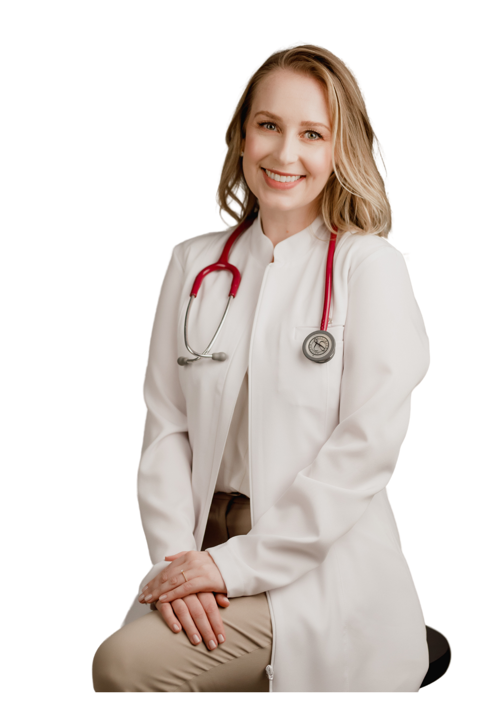
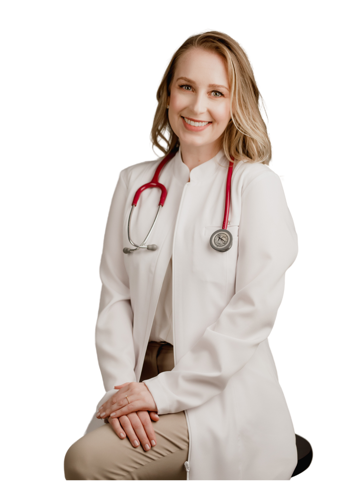

Olá, muito prazer! Me chamo Alana Beatriz Tomaselli Visentainer e sou Médica Oncologista em Blumenau.
Possuo formação em Medicina pela Universidade Regional de Blumenau (FURB) de 2008 a 2014, residência médica em Clínica Médica pelo Hospital Santo Antônio de Blumenau de 2018 a 2020 e residência médica em Oncologia Clínica pelo Centro de Pesquisas Oncológicas (CEPON) de Florianópolis de 2020 a 2023. Será um prazer atender você ou a quem você ama, e, dessa forma, mostrar que podemos cuidar das pessoas em um momento de angustia, sofrimento, investigação ou aceitação de uma maneira respeitosa e profissional. Conte comigo para enfrentarmos o câncer da maneira mais empática e lembre-se que juntos somos mais fortes nessa batalha que é a oncologia.
 
